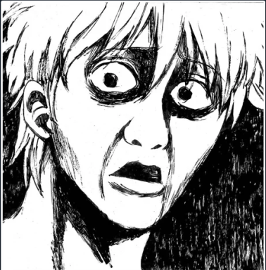

ПСЖ - ЭТО ВЫХОД?
Кто-то говорит, что ВЫХОД, а кто-то говорит, что НЕ ВЫХОД. Кто-то говорит, люблю ФП, а кто-то говорит *****. Ну что же тут поделать, ну что же тут поделать - приходится монеткой мне решать. Кто-то говорит, что люблю я Java, а кто-то говорит - плюсы моя любовь. Кто-то говорит, люблю Android, а кто-то говорит - ****** робот. Ну что же тут поделать, ну что же тут поделать - приходится монеткой мне решать.
Поздравляем команду СПб ИТМО 1: Standard deviation (Николай Будин, Арсений Кириллов, Дмитрий Саютин) с третьим местом и золотыми медалями на прошедшем сегодня ICPC World Finals 2020! Несмотря на ковидные ограничения, затянувшееся ожидание и менявшиеся вплоть до дня финала правила ребята отлично выступили и показали превосходный результат. Мы гордимся вами, так держать!
Количество студентов, написавших ПСЖ заметно растет - наблюдается биективное соответствие с законом Мура (экспоненциальный рост транзисторов). Однако, ПСЖ - это еще выход, ведь есть и те, кто не успел и там и там. Известно, что Хаскелев Иван Джавович несколько раз забывал написать ПСЖ, тем самым суммарно за все года поступления он получил 900 баллов за ЕГЭ. Как говорится, возьмем количеством.
С П О Р Т
Есть стереотипное мнение, что программисты не занимаются спортом. Однако, на фотографии выше изображен победитель всемирного соревнования по программированию с закрытыми глазами Алгоритмов Алгоритм Алгоритмович (родители сразу понимали, что сына ждет великое будущее). Как достичь такой же формы, как у нашего героя? Что ж, надо ежедневно писать по 10000 строк кода, и результат не заставит вас ждать.
Всем на будущее: 1. Не путайте модель мира в вашей голове с реальным миром. Они разные. 2. Задавайте вопросы в терминах мира и установленных для него фактах, а не в терминах вашей модели. 3. Корректируйте свою модель при поступлении новых фактов. 4. Если вам что-то надо, сформулируйте это явно (и в терминах мира, а не модели). В нашем случае (везде вы - множественное). 1. Вы построили в голове модель, про то, что возможность сдать харды на что-то влияет. 2. Вы стали апеллировать к (не) возможности сдать харды, вместо того, чтобы что-то узнать про правила оценки. 3. Вы неоднократно проигнорировали факт, что харды ни на что не влияют... (продолжение в следующем выпуске)
Нет ничего плохого в долгах, пока ты их контролируешь.
Много предсмертных слов героически написавших ПСЖ студентов возникло за такое долгое время существование кафедры. Сегодня перед нами цитата студента, наивного полагающего, что контролирует долги ;)